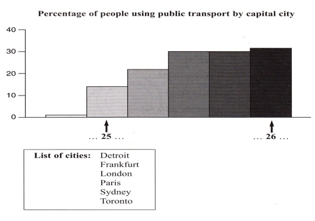
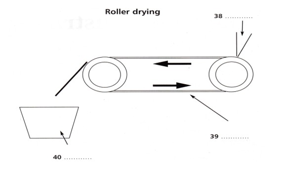

Complete the notes below.
Write NO MORE THAN THREE WORDS AND/OR A NUMBER for each answer.
Race details
Day & date 1
Place: Brighton 2
Registration time: 3
Sponsorship
-aim to raise over 4 as a team and get a free t-shirt
-free Prize Draw for trip to 5
Team Details
-must have crew of 20 and elect a 6
-under 18s need to have 7 to enter
-need to hire 8
-advised to bring extra 9
-must choose a 10 ..for the team
Complete the table below.
Write NO MORE THAN THREE WORDS for each answer.
* Enter two words and add the word and in the middle.
The name ‘kiwi’ comes from its 12 .
The kiwi has poor sight but a good 13 .
Kiwis cannot 14 .
Kiwis are endangered by 15 ‘’
Complete the notes below.
Write NO MORE THAN THREE WORDS for each answer.
| Stage of Program | Program involves |
|---|---|
| (16). | Looking at kiwi survival needs |
|
|
Putting science into practice |
| (17). | Schools and the website |
Complete the flow below.
Write NO MORE THAN THREE WORDS or A NUMBER for each answer.
Label the two bars identified on the graph below.
Choose your answers from the box and write them next to Questions 25-26.
2526

Choose TWO letters A-F.
Which TWO facts are mentioned about Copenhagen?
2728
B 30% of citizens walk to work
C introduction of parking metres
D annual reduction of parking spots
E free city bicycles
F free public transport
Choose TWO letters A-F.
Which TWO reasons are given for the low popularity of public transport?
2930
B low use means reduced service
C private cars safer
D public transport expensive
E frequent stopping inconvenient
F making connections takes time
Complete the notes below.
Write NO MORE THAN THREE WORDS for each answer.
• Available all year
• For 31
• In case of 32
Complete the table below.
Write NO MORE THAN THREE WORDS for each answer.
| Method of preservation | Advantage | Disadvantage |
| Ultra-high temperature (UHT milk) |
33 | spoils the taste |
| canning | inexpensive | risk of 34 |
| refrigeration | stays fresh without processing | requires 35 |
| 36 | effective | time- consuming |
| drying | long-lasting, light and 37 | loses nutritional value |
Label the diagram.
Write NO MORE THAN THREE WORDS for each answer.
3839
40
